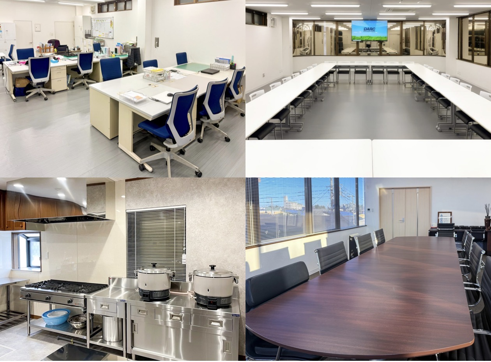

住居確保・入居調整支援
相談初期の段階で住まいの空白をつくらないことを最優先に、制度活用を含めた入居調整と生活基盤の確保を支援します。
- 緊急性を踏まえた住居選定
- 住居確保給付金等の活用確認
- 住宅セーフティネット接続支援
- 入居時の実務手続き支援
- 生活開始直後の初期定着支援
Support
住まいの提供にとどまらず、尊厳を守りながら生活全般を支える包括支援を行います。
相談初期の段階で住まいの空白をつくらないことを最優先に、制度活用を含めた入居調整と生活基盤の確保を支援します。
専門スタッフが定期面談を行い、生活課題・再発不安・孤立リスクの低減に伴走します。
日々の活動や地域との交流を通して、自分の役割や居場所を見つけられるよう支えます。ご家族には、相模原ダルクが月1回開催する家族会などもご案内します。
就労支援機関と連携し、仕事探しから就労後の定着まで継続的に支えます。
代表の田中は相模原ダルクの代表も務め、10年以上にわたり一般就労への接続に取り組んでいます。本人の希望や体調を確認し、ハローワークや外部の就労支援機関とも連携します。
相模原ダルクの指定障害福祉サービスでは、弁当・惣菜の販売や無農薬農業などを通じて就労に向けた準備を行っています。当社はそれらの活動や支援機関へつなぎ、本人に合う働き方を一緒に考えます。
医療機関、福祉事務所、保護観察所、自治体窓口等と連携し、重複や空白のない支援設計を行います。
DV被害や緊急避難が必要なケースでは、特に母親と子どもの安全を最優先に、住まいと生活再建を一体で支援します。
LGBTQ+当事者、外国人労働者・移民等の方々に対し、文化や制度の違いを踏まえた住居起点の支援を実施します。
日本語・英語・韓国語・タガログ語・タイ語に対応しています。通訳・同行サポートも常時可能です。その他の言語についてもご相談ください。

住居提供で終わらせず、家賃補助活用・就労制度接続・3か月・6か月・1年・2年の面談まで見据えた実務支援を継続します。
CHILDREN & FAMILIES
子育てや家庭の悩み、子どもの生活・学びの困りごともご相談ください。家庭の事情や本人の意思を尊重し、学校・行政・福祉などの関係機関と、必要な範囲で連携します。
夜間を含む入居者向けの緊急連絡方法は、利用時に個別にご案内します。新規の電話相談は月〜金 10:00〜17:00／土曜・祝日 10:00〜13:00に受け付けています。
Stories
実際に支援を受けた方々の声です。住まいと制度が重なったとき、回復と再出発が前へ進むことを示しています。
20年以上の薬物依存から回復の道へ
住まい確保と家賃補助活用を起点に、就労継続支援と回復プログラムを続け、生活の安定を取り戻しました。
「住む場所があることで、心が安定しました。」
出所後、社会復帰への第一歩
出所後の住居不安を早期に解消し、ハローワーク接続により就労開始までの生活基盤を整えることができました。
「信じてくれる人がいると、前に進めます。」
アルコール依存からの回復と家族再会
ナイトケアハウスでの生活と3か月・6か月・1年・2年の面談により、断酒継続と家族関係の再構築につながりました。
「もう一度、家族と話せる日が来ました。」
DV被害から母子での再出発へ
緊急避難先の確保と関係機関連携により、安全を確保したうえで中長期の住居移行と生活再建を進めています。
「子どもと安心して眠れる場所ができて、ようやく前を向けました。」
外国人労働者としての孤立から生活安定へ
言語と制度理解の壁で住居を失いかけましたが、住居確保と制度案内、就労継続支援を組み合わせて生活を立て直しています。
「わからないことを一緒に整理してもらい、安心して働き続けられています。」
※プライバシー保護のため、内容の一部を変更しています。